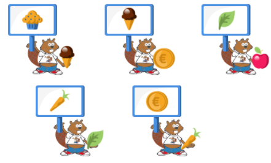
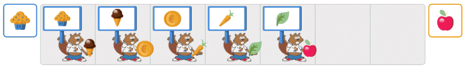
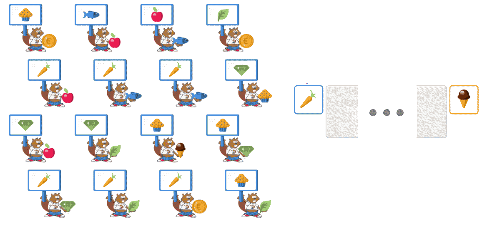
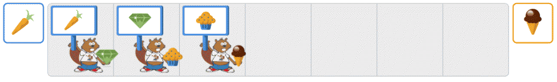
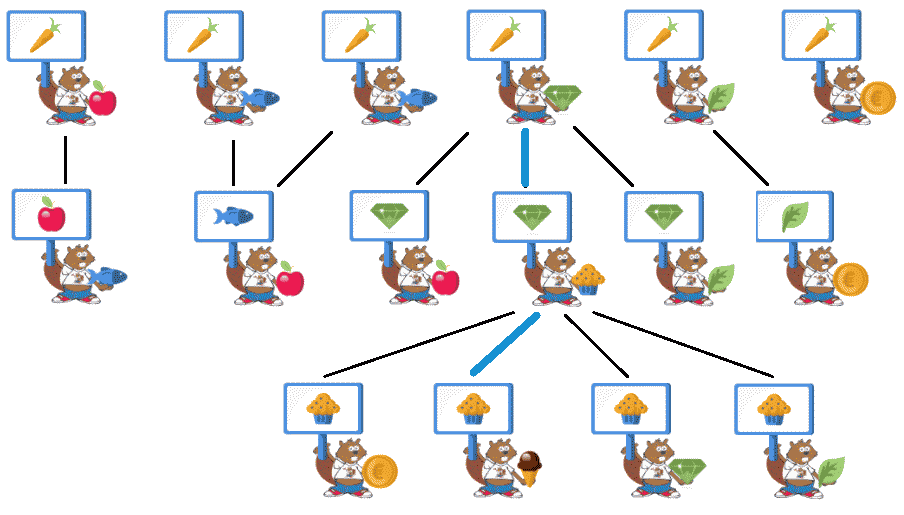
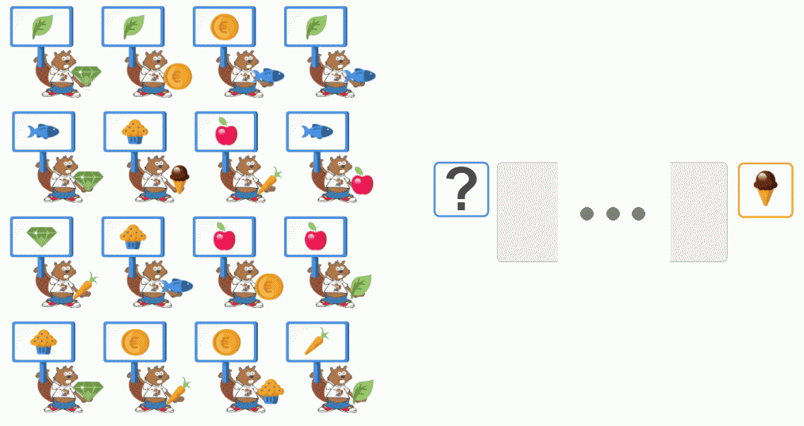
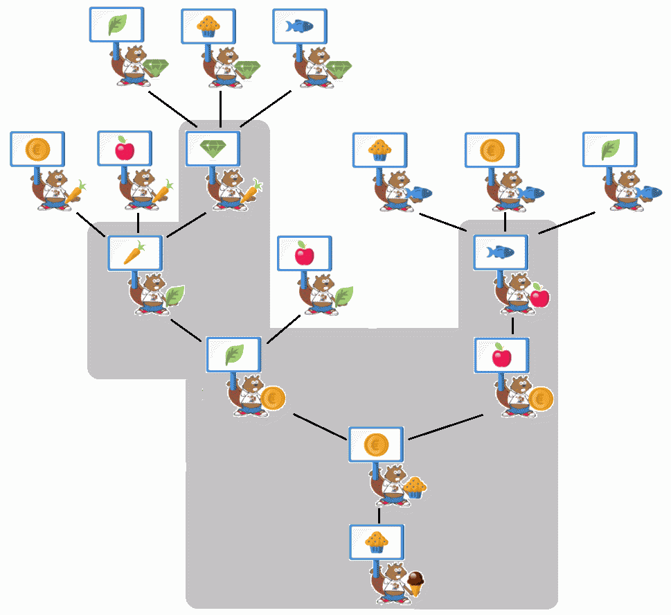

Solution
Dans cette version, il fallait utiliser tous les Castors pour passer de l'objet de départ à l'objet à obtenir.
Prenons par exemple la situation suivante (elle peut être différente de celle que vous aviez à résoudre) :

Si l'objectif est de passer du muffin à la pomme, il faut commencer par placer le castor qui a un muffin sur son panneau, et donne en échange la glace au chocolat. On place ensuite le castor qui a une glace au chocolat sur son panneau, et donne en échange la pièce de monnaie. On continue ainsi jusqu'à obtenir la pomme :

Dans cette version, il fallait choisir une partie des Castors pour passer de l'objet de départ à l'objet à obtenir.
Prenons par exemple la situation suivante, où il faut passer de la carotte à la glace au chocolat. Notez que cette situation peut être différente de celle que vous aviez à résoudre, mais elle est similaire :

On remarque que six castors ont une carotte sur leur panneau, ce qui signifie qu'il y a six débuts différents à essayer. Seul l'un d'entre eux permet d'atteindre la glace au chocolat.
On peut gagner beaucoup de temps si l'on remarque qu'un seul castor propose une glace au chocolat, qu'il donnera en échange d'un muffin.
De même, un seul castor propose un muffin, qu'il donnera en échange d'une pierre précieuse. Enfin un seul Castor propose une pierre précieuse, qu'il donnera en échange d'une carrote.
Avec ces trois castors, on peut donc passer, de la carotte, à la pierre précieuse, puis au muffin et à la glace au chocolat.

On peut représenter l'ensemble des possibilités en réorganisant les castors et en reliant par des traits ceux qui peuvent s'échanger des objets :

Dans cette version, il fallait choisir un ensemble de castors, de sorte que quel que soit l'objet que l'on nous donne au départ, on puisse faire une série d'échanges qui donne l'objet à obtenir.
Prenons par exemple la situation suivante, où il faut former un groupe de Castor qui permetrra d'obtenir une glace au chocolat, quel que soit l'objet que l'on nous donne au départ :

Pour trouver cette équipe, il faut partir de la glace au chocolat, puis ajouter le castor qui donne une glace au chocolat en échange d'une pièce de monnaie, puis les deux castors qui donnent une pièce de monnaie, en échange d'une pomme pour l'un, et d'une feuille pour l'autre.
À chaque castor ajouté ainsi au groupe, on a un nouvel objet à partir duquel on est capable d'obtenir la glace au chocolat. Parmi les castors qui proposent cet objet, on peut alors ajouter tous ceux qui demandent un objet qui n'est pas déjà sur un panneau des castors du groupe.
On peut visualiser les différents castors que l'on peut ajouter en partant de la glace au chocolat en bas. Sur fond gris, on met les Castors du groupe sélectionné. D'autres groupes pouvaient aussi fonctionner.

C'est de l'informatique !
Dans ce défi, on manipulait ce que l'on appelle un graphe : on avait différents objets, qui correspondent à ce que l'on appelle les noeuds d'un graphe, et des possibilités de passage d'un objet à l'autre, qui correspondent à ce que l'on appelle des arcs entre les noeuds du graphe.
Dans les versions deux et trois étoiles, il fallait simplement trouver un chemin entre deux noeuds de ce graphe.
Dans la version quatre étoiles, il fallait sélectionner un sous-ensemble des arcs, tels que de tout noeud, il existe un chemin vers le noeud objectif.